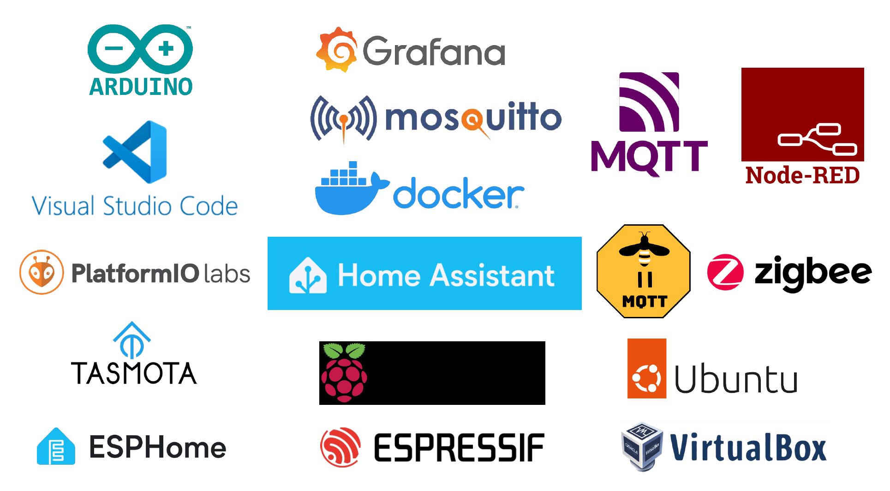

Course Syllabus for "Software Development Practice"#
Computer Engineering Program, KMUTNB, Academic Year 2024
Course Overview#
- Develop skills to create small to medium-sized software projects
- Conduct systematic analysis of software problems
- Solve programming challenges through requirement definition and specification
- Enhance self-learning capabilities for problem solving
- Understand and apply the software development process
- Integrate various software components effectively
- Utilize modern software development tools
- Present and deploy software projects professionally
Key Topics#
This course will cover the following topics:
- Exploring various computing environments
- Linux OS & distributions; Virtual Machines, WSL2 Linux
- Containerization; Docker engine
- Embedded Computers; Single-Board Computers (SBCs)
- Basic Linux Commands and Bash Scripting
- Version Control with Git; Online Project Documentation; GitHub Pages
- VS Code IDE and Extension Packs
- Remote Access with SSH; Remote Desktop with VNC
- Remote Software Development Process
- C/C++ Programming and Development Toolchains; C/C++ Build Tools; Cross Compilation
- Embedded Software Development; Arduino Hardware & Software
- Basic Web Programming, REST APIs, and JSON-based Data Formats
- MQTT Protocol & WebSocket Programming
- Open Source Smart Home Platforms (e.g., Tasmota, ESPHome)
- Flow-based Programming using Node-RED
- Integration of WiFi / ZigBee-based Devices; Home Assistant (HA) + Companion; Grafana and InfluxDB
- Team-based Mini-projects (with a focus on smart home solutions)
Expected Learning Outcomes#
Here are key expected learning outcomes based on the provided topics:
- Proficiency in Linux and Containerization:
- Gain practical skills in navigating and managing Linux environments, utilizing Virtual Machines, WSL2, and Docker for containerization, and working with embedded and single-board computers.
- Mastery of Programming and Development Tools:
- Develop competence in C/C++ programming, cross-compilation, and embedded software development using tools like VS Code IDE, Arduino, and other build tools. Understand the principles of remote software development.
- Expertise in Web and IoT Integration:
- Learn to build and deploy web applications using REST APIs and JSON, and integrate IoT devices using MQTT, WebSockets, and open-source smart home platforms like Tasmota and ESPHome.
- Experience in Collaborative Smart Home Projects:
- Work effectively in teams to design and implement smart home solutions, utilizing flow-based programming with Node-RED and integrating technologies like ZigBee, Home Assistant, Grafana, and InfluxDB.
Lecture Notes / Handouts#
The handouts listed below aim to provide the knowledge and skills necessary to successfully complete the mini-project..

This work is licensed under a Creative Commons Attribution-ShareAlike 4.0 International License.
Created: 2024-07-05 | Last Updated: 2024-10-06